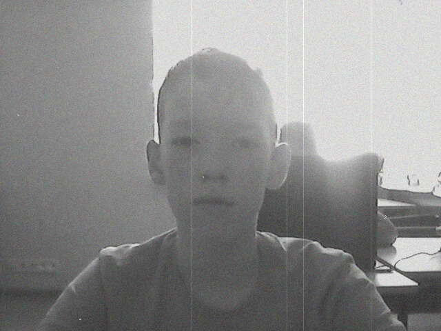

Rodionov.i.samuil
12 years
in Kyiv Ukraine in 2006 year
Age:

Born:
Хоббі
Я люблю грати в комп'ютені ігри з друзями та гуляти на вулиці теж на
Колонізація Марса
Марс хоче колонізувати Ілон Маск. Він хоче перенаселити частину землі на марс.Маск, відомий своєю схильністю встановлювати дивні дедлайни, оголосив ще про одне: вже в наступному році мають відбутися випробувальні польоти його космічного корабля, який в майбутньому полетить на Марс.Иарс знаходиться на відстані в 55 млн км від землі. Летіти туди треба мінімум 5040 годин
Колонізація Марса
Презентація
1. Хто і що саме зробив, винайшов?
Ілон Маск зробив ідею колонізувати марс із за перенаселення Землі.
2. Коли та де це було?
Це було нещодавно, на Землі.
3. Чому це круто, чому ми вибрали це відкриття?
Тому що це дуже актуальна на сьогодні тема.
4. Що передувало відкриттю?
Перееаселення планети Земля та ідея експанції людства
5. Яка його користь для сучасного світу?
Буде більше місця.
6. Для яких саме галузей?
Для зручності.
7. Які можливі наслідки відкриття?
Багато затрат.
8. What impact did it have on the related fields of knowledge?
Very large.
9. Which big problem is this breakthrough?
Overpopulation
10. The part of the supersystem is the exploratory discovery and the problem it solves.
I do not know.
Презентація.

Very large.
9. Which big problem is this breakthrough?
Overpopulation
10. The part of the supersystem is the exploratory discovery and the problem it solves.
I do not know.